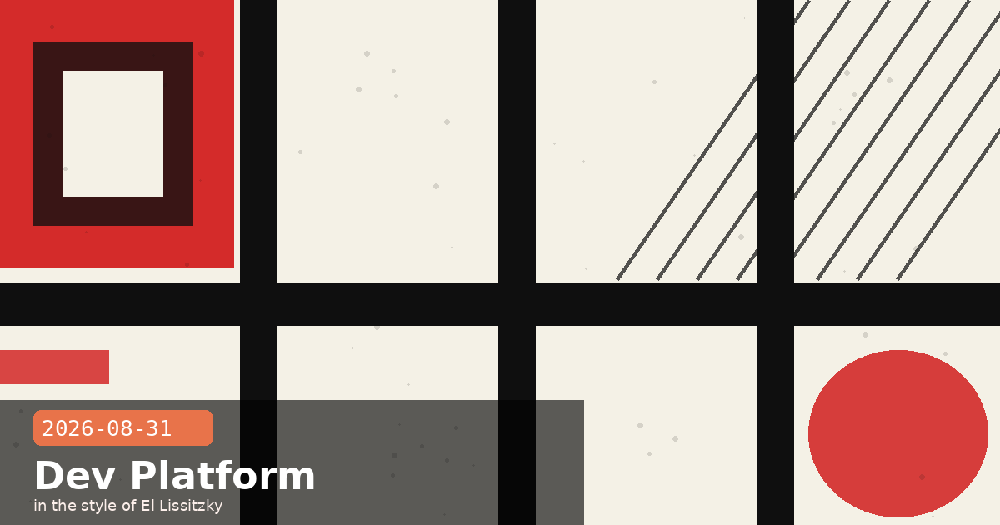

Personal API Keys, Admin SDK, and Beta Header Graduation

🧭 Personal Keys and Service Account Keys: API Access Now Tied to Identities, Not Just Workspaces
Anthropic's August 27 platform release added two new API key types to the Claude Console, closing a significant gap in enterprise key hygiene. Until now, all keys belonged to a workspace and continued working even after the person who created them left the organisation. The new types change that:
Personal keys — act as the creating user. They carry exactly that user's permissions and automatically stop working when the linked account is removed from the organisation.
Service account keys — act as a service account, a dedicated identity independent of any individual. Like personal keys, they expire when the service account is removed, making cleanup straightforward.
Both types can be scoped to a specific workspace (the common case) or granted admin-level access across all workspaces for keys that need to call admin endpoints. The existing workspace API key model remains supported as a legacy option, so no existing integrations break.
Why this matters for security
The previous workspace-key model created a common offboarding risk: when an engineer left, their keys lived on unless explicitly revoked — a manual step that was easy to miss. Personal keys remove that manual step. The moment an account is removed (by any admin action), every personal key for that account stops working. This brings Anthropic's API key model in line with how GitHub, GCP service accounts, and AWS IAM already handle employee offboarding.
Migration recommendation
For any key currently used by a specific developer for testing or personal integrations, rotate it to a personal key. For CI/CD pipelines and service-to-service calls, create a service account and issue a service account key against it. Reserve legacy workspace keys only for contexts where a shared, owner-independent key is genuinely required. The Console now lets organisation admins see exactly which account each key belongs to, making an audit straightforward.
# List org API keys (Admin API — now in the ant CLI)
ant beta organization api-keys list
# In Python SDK 1.2.0+
keys = client.beta.organization.api_keys.list()
for k in keys:
print(k.id, k.type, k.expires_at) # type: "personal" | "service_account" | "workspace"
API keyssecurityservice accountsenterpriseoffboardingClaude Console
🧭 Admin API Lands in Every Official SDK and the ant CLI — curl One-Liners No Longer Required
Also shipping on August 26: the Admin API is now available in the ant CLI and the Python, TypeScript, C#, Go, Java, PHP, and Ruby SDKs under client.beta.organization. Previously, Admin API calls required hand-crafted curl commands with an Admin API key — workable for one-offs, painful for scripts and automation.
What the SDK surface covers
The new client.beta.organization namespace exposes:
Organisation info
Members, invites, and member roles
Workspaces and workspace membership
API keys (including the new personal and service-account types)
Note: usage and cost reports, and Claude Enterprise user-management and analytics endpoints, remain curl-only for now. The SDK reads an Admin API key from ANTHROPIC_API_KEY or an org:admin OAuth token from ANTHROPIC_AUTH_TOKEN.
# Python SDK 1.2.0+ — list organisation members
import anthropic
client = anthropic.Anthropic() # reads ANTHROPIC_API_KEY
members = client.beta.organization.members.list()
for m in members:
print(m.email, m.role, m.id)
# ant CLI equivalent
ant beta organization members list
Immediate use case: automated offboarding scripts
Combine the new member list and API key list endpoints in a single Python script to build an offboarding checker: enumerate members, flag any whose email domain no longer matches your organisation's domain (post-acquisition cleanup, contractor end-dates), and deactivate their keys — all via the SDK without a single curl call. Pair with personal keys (Entry 1 above) and the API key scope filtering, and key hygiene becomes a cron job rather than a quarterly ticket.
🧭 Files API and Skills API Drop Beta Headers in SDK 1.2.0 — Two Migration Gotchas to Know
Python SDK 1.2.0, TypeScript SDK 0.122.0, and their sibling releases (Go 1.68.0, Java 2.59.0, Ruby 1.67.0, C# 12.44.0) all shipped August 27 with a graduation: client.beta.files and client.beta.skills no longer send the old files-api-2025-04-14 and skills-2025-10-02 beta headers. They now return the same response shapes as client.files and client.skills.
This is a promotion, but two behaviour changes come with it that existing integrations may need to handle:
Skills: delete now removes all versions
The most impactful change: client.beta.skills.delete(skill_id) previously deleted only the current version. After SDK 1.2.0, it deletes the skill container and all its versions in one call. If your code relied on the old partial-delete behaviour to iterate through versions, it will now silently delete more than intended. Review any code that calls skills.delete() before upgrading.
Type rename: BetaSkill → BetaContainerSkill
The beta Messages type for a container Skill reference has been renamed from BetaSkill to BetaContainerSkill. Typed SDK users (Python, TypeScript, Go, Java, C#) will see a compile error on upgrade if they reference the old name — treat this as a useful prompt to audit your type annotations. Requests that still send the beta headers keep receiving the old shapes unchanged, so you can upgrade the SDK version without immediately adopting the new behaviour by keeping the header in place temporarily.
Check before upgrading SDK to 1.2.0 / 0.122.0
Search your codebase for any call to .beta.skills.delete( and any import or type annotation referencing BetaSkill. Update the delete call logic and rename the type before cutting over. The Files API migration guide and Skills API migration guide in the official docs list every change with before-and-after code snippets.
# Before SDK 1.2.0 — beta surface, sends old header automatically
client.beta.files.list() # sends files-api-2025-04-14 header
client.beta.skills.delete(id) # deleted only current version
# After SDK 1.2.0 — same surface, no old header, GA behaviour
client.beta.files.list() # identical to client.files.list()
client.beta.skills.delete(id) # deletes container + ALL versions ← check this
# Type rename (Python example)
# Before: from anthropic.types.beta import BetaSkill
# After: from anthropic.types.beta import BetaContainerSkill